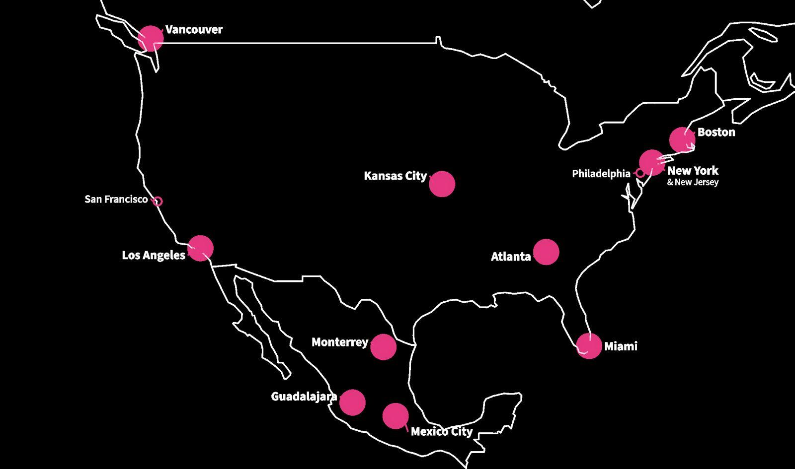
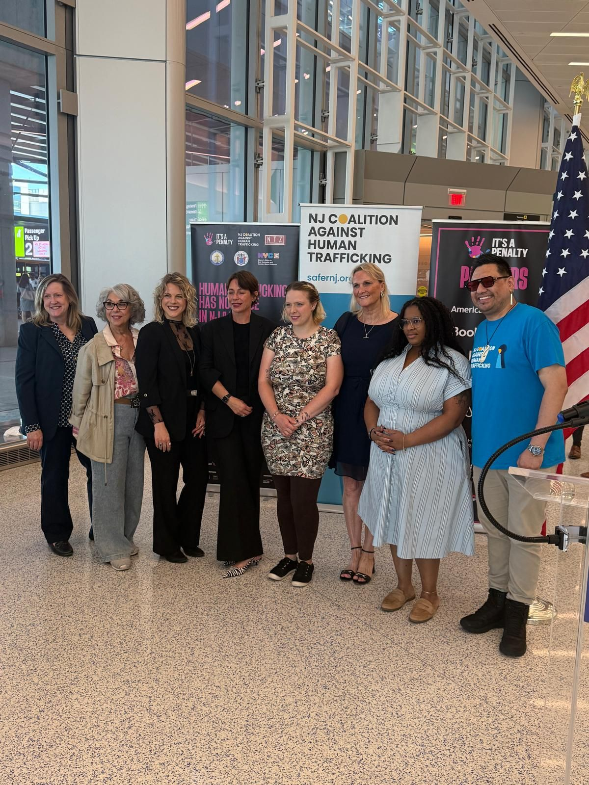
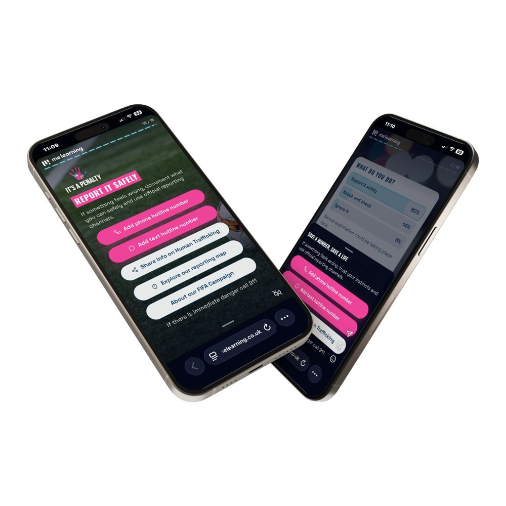
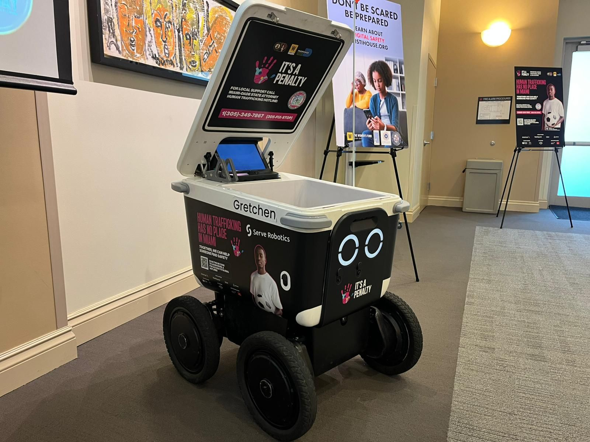

Public awareness
Highly visible trafficking-prevention messaging across airports, transport networks, outdoor advertising, hotels, digital platforms, media, fan events and public spaces.
Impact report · North America
It’s a Penalty’s largest campaign to date, across 3 countries and 11 FIFA World Cup 2026 host cities.

FIFA World Cup 2026 presented an unprecedented opportunity to mobilise action against human trafficking and exploitation across the largest and most geographically dispersed World Cup in history. Building on more than a decade of experience delivering campaigns around major sporting events, It's a Penalty (IAP) delivered its largest campaign to date across the United States, Mexico and Canada.
IAP's model goes beyond public awareness. It uses the unique mobilisation created by major sporting events to bring together businesses, governments and public authorities, survivor leaders, specialist civil society organisations, transport and hospitality providers and communities, connecting large-scale awareness with locally led prevention, reporting and response.
For FIFA World Cup 2026, that model operated at unprecedented scale. Campaign messaging reached people through airports, transport networks, outdoor advertising, hotels, airlines, digital platforms, media, fan events and public spaces across the three host countries.
Impact at a glance
* These safeguarding outcomes formed part of wider law-enforcement and multi-agency responses and cannot be attributed directly to It's a Penalty.
Scale alone was not the measure of success.
Post-campaign evaluation found that 95% of respondents felt more confident recognising a potential trafficking situation, 94% said they would be likely to report suspected trafficking and 90% intended to do something differently after seeing the campaign.
The campaign also created practical routes to action. Of 30,847 micro-awareness learning sessions, 9.6% resulted in users accessing embedded hotline information, while 6% resulted in the learning being shared with others. In Mexico, the national trafficking hotline received 685 reports of possible trafficking during the World Cup, with reports increasing by up to 60% during the wider prevention effort. These figures reflect a wider ecosystem of prevention activity and cannot be attributed to IAP alone, but provide important evidence of action alongside the campaign.
Alongside public awareness, more than 13,000 people engaged with training and learning content across the hospitality sector, strengthening the ability of frontline teams to recognise potential exploitation and understand how to respond.
The campaign
For It’s a Penalty, the opportunity was not simply to run an awareness campaign alongside the event. It was to use the World Cup as a platform to mobilise action against human trafficking at scale, while ensuring that activity was shaped by local expertise and connected to existing routes to support.
The campaign therefore combined a consistent international platform with locally adapted delivery across the United States, Mexico and Canada.
IAP brought together five interconnected elements:
Highly visible trafficking-prevention messaging across airports, transport networks, outdoor advertising, hotels, digital platforms, media, fan events and public spaces.
Country and locally relevant reporting information, alongside a mobile-first micro-awareness tool helping people recognise potential exploitation and understand what to do next.
Training and learning for people working in sectors that may encounter exploitation, particularly hospitality and travel.
Campaign development and delivery informed by survivor leaders, specialist organisations and locally led partners, ensuring messaging and interventions reflected local context.
Global companies, public authorities, transport and hospitality networks, civil society and other major-event stakeholders mobilised their platforms, people, expertise and resources around a shared objective.
Our ambassadors
A huge thank you to our ambassadors for lending their voices and platforms to bring this campaign to life. Their time, support and commitment helped us reach more people with vital information about human trafficking and exploitation. This campaign would not have had the same reach or impact without them.
Shot and produced by Sheep Street Films
With thanks to Steven Caldwell, Campaign Influencer (Canada)
The FIFA World Cup campaign would simply not have been possible without the financial investment, in-kind support, networks and extraordinary commitment of our corporate partners.
As a relatively small organisation delivering an ambitious campaign across three countries, It’s a Penalty relied on partners not simply to amplify the campaign, but to help make delivery at this scale possible. Their financial contributions funded the work, while significant in-kind support including 2 million miles donated by American Airlines, flights provided by British Airways and preferred hotel rates from IHG and Hard Rock enabled our team to travel for Congresses, planning workshops and campaign launches across the host countries.
Partners also opened their own networks and channels, mobilising hotels, accommodation providers, drivers, airline passengers, employees and travel-sector partners to extend trafficking-prevention and reporting information far beyond the audiences IAP could have reached alone.
Perhaps most powerfully, many of these organisations are competitors in their everyday business. Through this campaign they came together around a shared commitment to preventing human trafficking and exploitation - demonstrating the unique convening power of major sporting events and what becomes possible when organisations put collective action ahead of competition.
We are enormously grateful to every partner that invested in, supported and stood alongside this campaign. Their contribution was fundamental to what we were able to achieve.

Uber: 950,000+ drivers reached
Host cities
There was deliberately no single delivery model. In some locations, IAP worked through established coalitions and structures; elsewhere, the World Cup created the impetus for new partnerships and networks to form. In some markets, local organisations led mobilisation, while in others IAP played a more formal coordinating role.
What remained consistent was IAP’s role in providing the major-event platform, campaign infrastructure, interventions, partnerships and reach, connecting these with the organisations and systems already working locally to prevent and respond to exploitation.
Innovation in action
The campaign tested new ways to put practical safeguarding information directly into people’s hands and take human trafficking prevention messaging into the everyday environments of World Cup host cities.

01A mobile-first micro-awareness tool, developed with MeLearning, gave travellers and the wider public a short, accessible way to recognise potential exploitation, understand what action to take and connect directly to support.
The tool was promoted through geo-targeted social media advertising focused on human trafficking hotspots across host cities, helping place safeguarding information in front of audiences in locations where vulnerability and risk were heightened. Its flexibility also enabled campaign partners to use it in different ways, including IHG, which integrated the tool into colleague learning.

02Innovation also extended beyond digital learning. In Miami and Los Angeles, campaign messaging was carried through city streets on Serve Robotics autonomous delivery robots, creating an unexpected and highly visible way for people to encounter human trafficking prevention messaging in public spaces. The Women’s Fund Miami-Dade secured the activations.
Ruth AI, developed by Parasol Cooperative and designed with survivors and advocates, provided another way for people to seek information and support. For someone who may not feel comfortable or confident making a phone call, a private, trauma-informed digital space can offer a more accessible first step. Ruth enables users to explore concerns at their own pace and on their own terms, providing guidance on how human trafficking can manifest, what signs to look for and what to do if they are concerned about themselves or someone else.
Together, these interventions tested different ways of reducing the distance between seeing a trafficking-prevention message and knowing what action to take
Survey findings
The FIFA World Cup 2026 campaign didn’t just raise awareness — it helped people recognise trafficking, understand how to report it and feel more able to act.
Survey findings indicate that the campaign helped translate awareness into intended action. Before seeing the campaign, 66% of respondents did not know or were unsure where to report suspected trafficking. Following exposure, 51% said they had learned new information about how or where to report concerns, while 42% intended to note down a reporting number or website.
Turning awareness into practical knowledge
learned how or where to report suspected trafficking
learned something new about how common trafficking is
learned a trafficking sign they had not previously recognised
learned about the connection between trafficking, travel, hospitality and major sporting events
intended to note down a reporting number or website
The greatest impact was among those who needed the information most
Among respondents who did not know or were unsure where to report before seeing the campaign, 67% said they learned new information about how or where to report.
Among respondents who previously knew no specific signs of trafficking, 39% learned a sign they had not recognised before.
Learned how/where to report
More confident recognising trafficking
Very likely to report
The evaluation suggests that the FIFA World Cup 2026 campaign was particularly effective at strengthening reporting knowledge and people’s intention to act. It also identified an opportunity to make the signs of trafficking even more memorable.
We will take this learning into future major sporting event campaigns by combining simple, highly visible signs of exploitation with realistic scenarios and clear reporting pathways — helping audiences move from seeing a campaign to recognising potential exploitation and knowing what to do next.
About the survey: Post-campaign surveys were conducted across the United States, Canada and Mexico. Following data cleaning, 235 responses were included in the analysis (US n=113; Canada n=112; Mexico n=10). Respondents were asked about prior knowledge, campaign learning, confidence, reporting intentions and intended behaviour. Results represent self-reported knowledge, confidence and behavioural intention rather than independently observed behaviour. Due to the smaller Mexico sample, country-level findings for Mexico should be interpreted as indicative.
Training & preparedness
Alongside public awareness, the campaign helped strengthen the knowledge and capability of people and organisations who may encounter exploitation or play a role in prevention and response.
The hospitality sector was an important focus. Through partnerships with Booking.com, Hard Rock and IHG, more than 13,000 people engaged with campaign training and learning content. IHG alone reached 12,647 users across 3,400 hotels through its learning platform, using It’s a Penalty campaign content and the micro-awareness tool to engage colleagues at scale.
A further 601 people took part in dedicated frontline training with Booking.com (357) and Hard Rock (244). Using practical, real-world scenarios, staff explored what exploitation might look like in hospitality settings from unusual guest behaviour and booking requests to coercion, power imbalances and signs that someone may be being monitored or controlled.
Capability-building also extended well beyond hospitality.
In Mexico, two major pre-World Cup Congresses brought together government, law enforcement, civil society, international organisations and private-sector stakeholders to strengthen trafficking prevention and preparedness. In Guadalajara, more than 500 people participated in the 2025 International Congress on ZERO Tolerance for Exploitation, forming the first stage of a wider programme that progressed from Congress to intensive training and then to the World Cup public-awareness campaign. A second four-day Congress in Mexico City in February 2026 strengthened collaboration and knowledge around victim identification, major events, hospitality, child protection and government response.
Importantly, the value of this capacity-building was not only in the number of people reached. Feedback has indicated a shift in how some law-enforcement participants understood and responded to people experiencing exploitation - reinforcing a victim-centred approach in which potential victims are recognised as people in need of protection and support, rather than treated as perpetrators of offences connected to their exploitation.
In Los Angeles, the Regional Human Trafficking Task Force’s Sports and Major Events Committee reached more than 1,000 people through training and outreach in less than three months, including law-enforcement personnel, government officials, victim-service providers and frontline stadium staff. This included coordinated emergency-response training for 370 law-enforcement personnel and trafficking identification and response training for 100 front-of-house SoFi Stadium workers.
Training and preparedness activity was also embedded within wider local responses. In Atlanta, 348 Georgia hoteliers and hotel owners received anti-trafficking training through AAHOA, while in Miami more than 40 law-enforcement professionals and first responders were trained as part of the wider World Cup response.
Across these different settings, the principle was the same: frontline capability is not simply about recognising the signs of trafficking. It is about changing how potential exploitation is understood and how people respond when they encounter it.
The campaign’s experience showed the potential for training to influence professional attitudes as well as knowledge, while activity across hospitality, law enforcement and major-event workforces strengthened practical routes from recognition to appropriate response.
FIFA World Cup 2026 reinforced five priorities for future major sporting event campaigns:
— allowing time to build trust, understand local systems and involve lived experience from the outset.
— working through and strengthening existing expertise, relationships and response structures rather than applying a single delivery model.
— combining memorable signs of exploitation with clear, immediate routes to reporting and support.
— equipping frontline sectors and institutions to recognise potential exploitation and respond in a victim-centred way.
— using the event as a catalyst for relationships, knowledge and systems that continue after the tournament.
Future evaluation will increasingly look beyond reach to understand what people do differently, what organisations do differently, which relationships and systems are strengthened and what continues after the event itself has ended.
The ambition is not simply to make each campaign bigger, but deeper, more locally rooted and more capable of creating change that lasts beyond the final whistle.